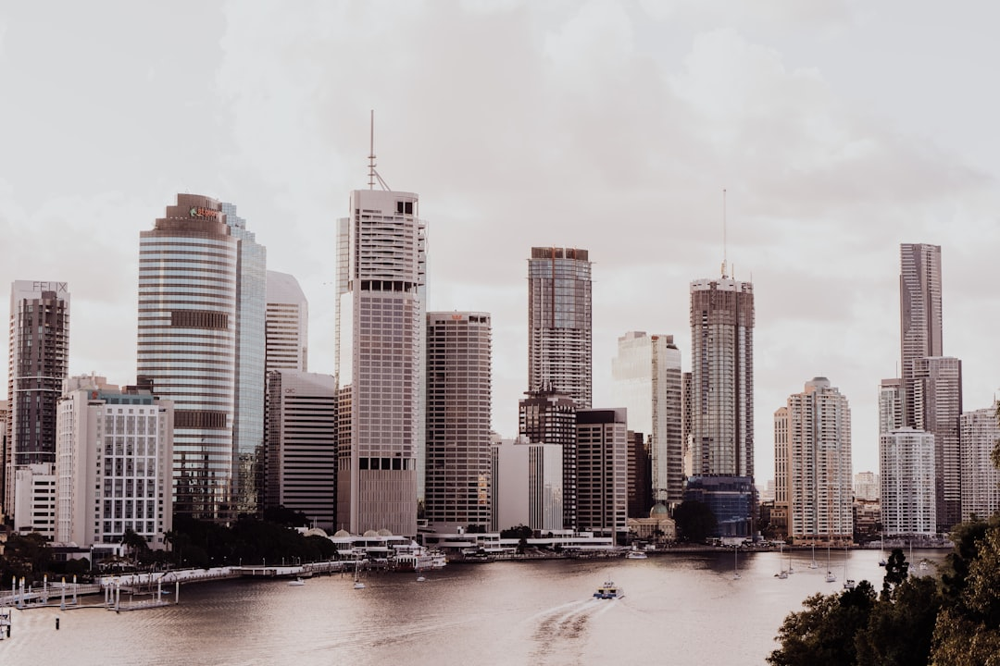

Brisbane Home Loan Broker is aimed at borrowers comparing qualified mortgage brokers across Brisbane and says the service is free to the borrower. The useful test is whether the broker can narrow the lender list to a file that fits the loan purpose, deposit position and income shape. That matters for first home buyers, refinancers, investors and self-employed borrowers, because each faces a different loan structure. Before you enquire, decide the loan purpose and the rough file shape, then ask which lenders the broker compares first and why.
Brisbane borrowers usually need three things clear before they enquire, the loan purpose, the next step and whether the broker can narrow the lender list to the right file shape. See Brisbane Home Loan Broker for the current service details.
Home Loan Broker Brisbane Explained
Brisbane Home Loan Broker is most useful when you treat it as a specialist Brisbane home loan team that can sort a file by purpose, not just by headline rate.
The main split is purchase, refinance, investment, self-employed, commercial finance or construction finance. Each path asks different questions of the lender, so a useful first chat names the purpose up front and asks which lenders suit that purpose, rather than starting with rate comparisons.
What The First Enquiry Should Get You
The live page says the enquiry starts with contact details and the loan type you are looking for. Push past that opening step and ask for something concrete in return, a shortlist of the two or three lender types likely to suit your file, and what documents they will want before they can assess it.
- State the loan purpose and rough file shape.
- Ask which lender types fit that shape, and why.
- Ask what documents to have ready before the next step.
That turns a first call into a working plan rather than a general chat.
Scenario Notes Worth Asking About
For first home buyers, Moneysmart says some lenders may accept a deposit as little as 5%, although a smaller deposit can mean lenders mortgage insurance. It also notes the Australian Government 5% Deposit Scheme for eligible first home buyers. The question worth asking is not whether a low deposit is possible, but whether the specific lender and loan the broker proposes avoids LMI or the scheme applies to your situation, since that changes the real cost of the loan.
For refinancers, Moneysmart says if you have less than 20% equity when switching, you might have to pay lenders mortgage insurance. Before assuming a lower rate will save money, ask the broker to confirm your equity position and whether any LMI cost would offset the rate saving.
For self-employed borrowers, Moneysmart says low-doc loans typically require less financial documentation and are usually used by self-employed people and small business owners, but are usually offered at higher interest rates. The practical follow-up is to ask whether a full-doc option is realistic given your paperwork, since that may beat a low-doc rate premium.
For construction and commercial files, ask how the broker will compare lenders on progress-payment terms and fees, not just the headline rate, and ask them to walk through those costs before the application goes in.
How The Brisbane Coverage Reads
The site names Brisbane CBD, South Brisbane, West End, New Farm, Paddington, Kangaroo Point, Fortitude Valley, Woolloongabba, Milton and Teneriffe. That reads as city-wide coverage rather than a one-suburb pitch.
The page also says the network has access to 100 plus lenders, so the value is in narrowing choice for the file you have, not in pushing a single lender. Moneysmart also advises comparing loans from at least two different lenders, which is a fair cross-check to run once the broker gives you a shortlist.
Questions To Ask Before You Commit
Ask who will handle the file, which loan types they see most often and how they choose which lenders to compare first. Ask what they need from you before they assess the application, and ask them to explain the cost difference between the top two options in plain figures, not just features.
That matches the way Moneysmart describes a broker's job, which is to understand your needs, find options, explain how each loan works and manage the process through to settlement, and it gives you a concrete basis for comparing what the broker proposes.
- Define the loan purpose. Decide whether you are buying, refinancing, investing, building or borrowing for another purpose before you enquire.
- Keep the first call tight. State the loan type and file shape, and ask which lender types fit before ending the call.
- Check the fit with figures. Ask the broker to compare cost, not just features, across the top two lender options.
- Submit the cleanest package. Send the application only once the broker confirms the documents are complete.
| Scenario | What to check | Useful detail |
|---|---|---|
| First home buyer | Does the proposed loan avoid LMI or use the deposit scheme? | Ask about 5% deposits and LMI |
| Refinance borrower | Does an LMI cost offset the rate saving? | Check equity before you switch |
| Self-employed borrower | Would a full-doc rate beat the low-doc premium? | Ask about low-doc options |
| Investor | Does the lender suit the wider portfolio? | Compare interest, fees and features |
| Construction or commercial borrower | What facility structure suits the job? | Ask how progress payments and fees compare |
Common questions
Is the service free to use? Yes. The live page says the service is free to the borrower, and that brokers are paid by lenders when the loan settles.
What should I have ready before I contact them? Start with your contact details and the type of loan you want, then be ready to explain the loan purpose and your rough file shape.
Which loan types are listed on the site? The live page lists home loans, refinancing, investment loans, commercial finance, construction loans and car loans.
What should a first home buyer ask about? Ask whether the proposed loan avoids lenders mortgage insurance and whether the 5% Deposit Scheme applies to your situation.
What should a self-employed borrower ask about? Ask whether a full-doc loan could beat a low-doc rate premium, given your paperwork, and how much documentation the lender wants.
This guide covers how Brisbane borrowers can use a broker for home purchases, refinancing, investment lending, commercial finance, construction finance and car finance, plus the questions that help a first enquiry stay practical.